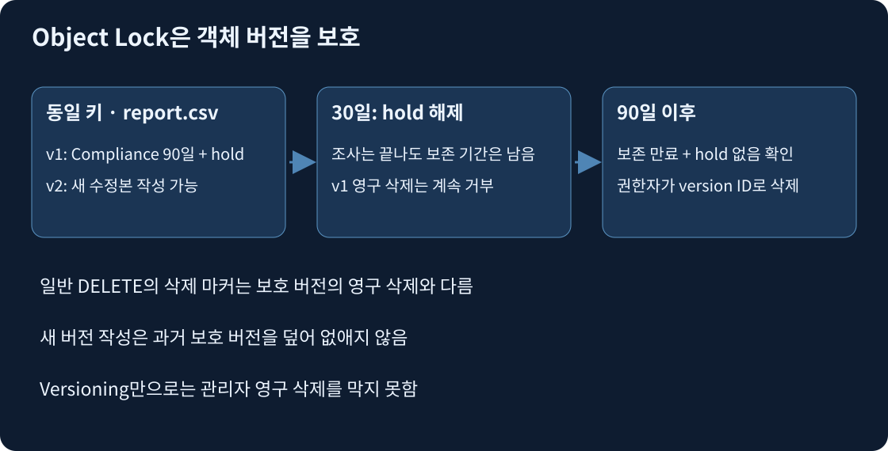
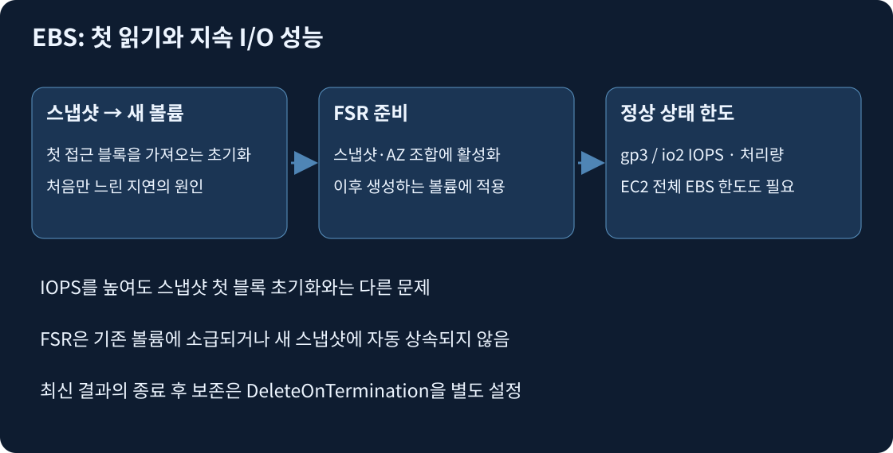

S3의 key는 버킷 안에서 객체를 식별하는 문자열이다. logs/2026/a.json의 슬래시는 일반 목적 버킷에서 접두사를 구분하는 문자이며 OS 디렉터리의 잠금·rename·부분 쓰기를 제공한다는 뜻이 아니다. PutObject는 키에 객체를 쓰고 GetObject는 데이터를 읽는다. ListObjectsV2는 접두사로 목록을 조회하며 GetObject 권한과 다른 s3:ListBucket 허용을 사용한다. 객체 범위 ARN에는 /key, 버킷 목록 범위 ARN에는 버킷 이름까지만 들어간다.
일반 목적 S3는 성공한 PUT·DELETE 뒤 후속 GET·LIST에 강한 일관성을 제공한다. 이는 여러 키를 하나의 트랜잭션으로 바꾸거나 여러 앱의 동시 쓰기를 파일 잠금으로 직렬화한다는 뜻은 아니다. 같은 키의 쓰기 경쟁은 앱에서 조정한다.
Versioning을 켠 버킷에서 PutObject report.csv가 v1을 만들고 다시 쓰면 v2를 만든다. v1은 전체 이전 객체로 남고 저장 요금도 든다. version ID 없는 DELETE는 삭제 마커를 추가해 일반 GET에서 파일이 없는 것처럼 보이게 한다. 이전 버전을 지정해 GET하거나 삭제 마커를 제거하면 복구할 수 있다. DeleteObject에 v1의 version ID를 지정하는 영구 삭제는 다른 행위이며, 버전 관리만으로는 권한 있는 관리자의 영구 삭제를 막지 못한다. 비현재 버전 수명 주기를 별도 설정해야 이전 데이터가 무한히 쌓이지 않는다.
Object Lock은 Versioning을 켠 버킷에서 특정 객체 버전을 WORM으로 보호한다. Governance는 권한과 우회 요청을 갖춘 주체가 우회할 수 있다. Compliance는 고정 보존 기간 동안 루트 사용자도 보호 버전을 삭제하거나 기간을 단축할 수 없다. 읽기 권한을 없애는 기능은 아니므로 승인된 조회는 계속 가능하다. 같은 키에 새 버전을 쓰거나 삭제 마커를 추가하는 것도 보호된 과거 버전의 영구 삭제와 다르다.

가상 사례: 감사 문서 v1에 고정 Compliance 90일과 legal hold를 함께 적용했다. Legal hold는 만료일 없이 명시적으로 해제할 때까지 남는 독립적인 잠금이다. 30일째 조사 종료로 hold를 해제해도 90일 보존은 남는다. 90일째에도 hold가 남아 있으면 삭제할 수 없다. 두 보호가 모두 끝난 뒤 권한 있는 주체가 해당 version ID를 지정해야 영구 삭제한다. Governance 우회 권한은 Compliance를 무력화하지 않는다.
버킷 기본 보존은 새 버전에 적용할 기본값이지 모든 기존 버전을 거슬러 자동 잠그는 설정이 아니다. 보호 버전을 다른 저장 클래스로 전환하는 것과 삭제하는 것도 다르므로 장기 보존과 Lifecycle 전환을 함께 설계할 수 있다. 규정의 삭제 방지는 단지 저렴한 Glacier 클래스를 고르는 것으로 해결되지 않는다.
출처: Object Lock, 보존 모드와 삭제 동작.
SRR은 같은 리전, CRR은 다른 리전 복제다. 둘 다 객체를 비동기로 옮기므로 원본 PUT 성공 시점에 대상 복제가 끝났다는 뜻은 아니다. 양쪽 버킷의 Versioning, S3가 사용할 복제 역할·권한이 필요하고 교차 계정이면 대상 버킷 허용도 필요하다. 소스에 Object Lock이 있으면 대상에도 활성화하고 보존·hold 읽기 권한을 갖춰야 한다. 라이브 복제는 규칙에 맞는 신규 객체에 적용하며 기존 객체는 Batch Replication 같은 별도 처리가 필요하다. 원본 삭제 마커의 복제 여부도 규칙으로 확인한다.
SSE-S3는 S3가 서버 측 암호화 키를 관리한다. SSE-KMS는 KMS 키 권한과 사용 비용도 고려한다. 암호화된 복제는 키 종류·복제 설정·원본 복호화 및 대상 암호화 권한까지 맞춰야 한다. “버킷을 복제했으니 KMS 권한도 복제됐다”는 추론은 실패한다. 기본 암호화 설정을 바꾸어도 기존 객체를 다시 쓰는 작업이 자동으로 수행되는 것은 아니다.
사례: 잘못된 덮어쓰기를 되돌리는 목적에 다른 리전 요구가 없다면 Versioning부터 검토한다. 모든 객체를 CRR로 보내면 다른 리전 사본은 생기지만 전송·저장·요청 비용도 늘며 불변 보존 권한을 대신하지 않는다. 리전 장애 복구라면 반대로 같은 버킷의 과거 버전만으로 부족하다.
출처: 복제 조건, SSE-KMS 복제, 암호화.
버킷 기본 SSE-KMS 설정은 이후 업로드의 기본값이다. 이전 SSE-S3 객체는 별도로 복사해 다시 써야 새 암호화가 적용된다. S3 Batch Operations Copy는 manifest(처리할 객체·버전 목록)에 있는 객체를 대량 복사하며 객체당 최대 5GB 제한이 있다. 5GB보다 큰 객체는 multipart copy 등 별도 경로가 필요하다. 복사 역할의 S3 읽기·쓰기와 원본 복호화·대상 KMS 암호화 권한도 맞춘다.
버전 관리 버킷에서 같은 키에 복사하면 새 버전이 생긴다. 현재 객체만 재복사해도 비현재 버전의 암호화는 그대로 남는다. 규정이 모든 보관 버전의 암호화 변경을 요구하면 manifest의 version ID와 각 버전 처리·보존 계획을 설계한다. 현재/비현재 순서 보존이 중요하면 비현재 버전을 먼저, 현재 버전을 나중 작업으로 복사한다. 보호된 과거 버전을 삭제해 비용을 없애려 하면 Object Lock과 충돌할 수 있다. 기본 암호화 스위치 하나가 과거 모든 버전을 변환한다는 설명은 틀리다.
출처: Batch Operations Copy 제한, 객체 복사.
멀티파트는 큰 객체 하나를 파트로 나누어 보낸다. CreateMultipartUpload로 upload ID를 얻고, 번호별 UploadPart를 병렬 전송하며 실패한 파트만 재전송한다. CompleteMultipartUpload가 성공해야 최종 객체가 생긴다. 완료되지 않은 파트는 객체 목록에 완성 파일로 보이지 않아도 저장 요금이 남으므로 AbortMultipartUpload 또는 수명 주기의 AbortIncompleteMultipartUpload로 정리한다. 이는 이전 버전을 지우는 NoncurrentVersionExpiration과 다른 규칙이다.
집계(compaction)는 작은 객체 여러 개를 큰 묶음으로 만든다. 5KiB 로그가 백만 개면 PUT 백만 번과 클래스 전환 백만 번의 단가가 누적된다. IA의 객체당 최소 과금 크기 128KiB도 실제 데이터보다 커진다. 최대 한 시간 지연과 묶음 조회가 허용된다면 수집 단계에서 시간별 압축 파일로 모아 PUT·전환 수를 줄인다. 기존 백만 개를 저장한 뒤 합치면 이미 낸 PUT 요금이 취소되지는 않는다. 묶으면 개별 레코드만 읽거나 수정하기 어렵고 지연·실패 재처리 단위가 커지는 대가가 있다.
Requester Pays는 저장 클래스가 아니라 요청·다운로드 전송 비용의 지불자 설정이다. 인증된 요청자가 x-amz-request-payer: requester 또는 SDK RequestPayer 값을 보내 비용 수락을 표시한다. 저장 비용은 소유자에게 남고 비공개 접근 정책도 여전히 필요하다. 익명 접근은 지원하지 않는다. 역할로 요청하면 그 역할 소유 계정이 요청자이므로 비용 주체가 기대와 맞는지 확인한다. 아카이브 RestoreObject의 데이터 검색 비용 등 예외까지 모든 비용이 연구자에게 이전된다고 단정하지 않는다.
S3 presigned URL은 허용된 신원이 특정 키·작업·만료 시간에 서명해 발급하는 URL이다. 앱은 사용자 인증 후 짧은 URL을 주고 클라이언트가 S3에서 직접 받게 해 앱 서버의 파일 중계 부하를 줄일 수 있다. URL을 가진 사람은 만료 내 재사용할 수 있고 발급자 임시 자격 증명이 먼저 만료되면 URL도 더 일찍 무효화된다. 버킷 전체 공개나 별도 영구 사용자 키 배포는 필요 없다.
출처: 멀티파트, 작은 객체 집계, S3 요금, Requester Pays, 사전 서명 URL.
접근 빈도, 최초 바이트 대기 시간, AZ 손실 허용, 보관 기간, 객체 크기와 검색량을 순서대로 비교한다. Standard는 빈번한 읽기에, Standard-IA는 드물지만 즉시 읽는 다중 AZ 데이터에 맞는다. One Zone-IA는 AZ 전체의 물리적 손실에 대비하지 않으므로 재생성 불가능한 원본의 유일한 사본으로 비용만 보고 선택하지 않는다. Express One Zone도 단일 AZ이며 디렉터리 버킷을 사용하는 별도 성능 선택이다.
| 클래스·검색 방식 | 접근 | 최소 보관 과금 | 중요한 탈락 조건 |
|---|---|---|---|
| Standard | 밀리초 GET | 없음 | 장기간 거의 읽지 않으면 저장 단가 비교 |
| Standard-IA / One Zone-IA | 밀리초 GET·검색 요금 | 30일 | 작은 객체 최소 과금·One Zone의 AZ 범위 |
| Glacier Instant Retrieval | 밀리초 GET·검색 요금 | 90일 | Glacier라는 이름만 보고 복원 대기라고 오해하지 않기 |
| Glacier Flexible, Standard 검색 | 보통 3~5시간 | 90일 | 즉시 읽기 요구에는 부적합 |
| Glacier Deep Archive, Standard 검색 | 보통 12시간 이내 | 180일 | 일반 표준 검색 6시간 요구에는 부적합 |
| Deep Archive, Bulk 검색 | 보통 48시간 이내 | 180일 | 짧은 복원 목표에는 부적합 |
시간은 일반적인 복원 시간이지 모든 용량·객체 수에 대한 절대 SLA가 아니다. Flexible의 Expedited는 별도 요금·용량 조건, 대규모 Batch 복원은 별도 시간·처리량 특성이 있으므로 문제의 검색 방식을 바꾸어 가정하지 않는다. Flexible·Deep Archive 복원 완료 후 GET으로 읽는 임시 사본은 지정 일수만큼 남고, 원본 아카이브 저장과 임시 사본의 비용이 함께 발생한다.
Intelligent-Tiering은 접근 패턴 변화가 불규칙할 때 객체를 계층 이동한다. 기본 Frequent·Infrequent·Archive Instant 계층은 즉시 읽을 수 있다. 선택적 Archive Access·Deep Archive Access를 활성화하면 복원 대기가 생긴다. “항상 즉시 조회”가 요구되면 선택적 두 아카이브 계층을 켜지 않는다. 128KiB 미만은 모니터링·자동 계층 이동 대상이 아니므로 작은 파일 무더기에 무조건 유리하지 않다.
출처: 저장 클래스, 검색 방식과 시간, Intelligent-Tiering, 복원 동작.
Lifecycle 전환일은 보통 생성 후 경과일이며 마지막으로 읽은 날부터 세는 규칙이 아니다. 전환·현재 버전 만료·이전 버전 영구 삭제·불완전 멀티파트 중단은 서로 다른 동작이다. prefix·태그·크기로 적용 대상을 좁히고 보호해야 하는 premium/ 등 예외를 필터 설계에 반영한다. 클래스의 최소 보관 기간 전에 삭제·전환하면 잔여 기간 요금이 생길 수 있다. 현재 기본 전환은 128KiB 미만 객체를 대상으로 하지 않으며 명시적 크기 필터 등 설정에 따라 달라진다.
아래 가상 규칙은 reports/ 객체를 30일 후 Standard-IA로 옮기고, 비현재 버전은 비현재가 된 뒤 90일 후 정리하며, 시작한 지 7일 된 미완료 파트를 중단한다. 법적 보존 자료에는 만료·삭제 요구와 Object Lock을 먼저 맞춘다.
{"Rules":[{"ID":"study-reports","Status":"Enabled","Filter":{"Prefix":"reports/"},"Transitions":[{"Days":30,"StorageClass":"STANDARD_IA"}],"NoncurrentVersionExpiration":{"NoncurrentDays":90},"AbortIncompleteMultipartUpload":{"DaysAfterInitiation":7}}]}
사례: 7년 증거 보관이며 첫 90일 자주 읽고 이후 48시간 복원이 가능하면 Standard에서 Deep Archive로 옮기는 정책을 비교한다. Compliance 보존은 별도로 7년 유지한다. 첫 한 달만 자주 읽고 이후 즉시 읽어야 하면 Standard-IA 같은 즉시 클래스가 후보이며 Deep Archive는 가격이 낮아도 지연 요구를 위반한다. 비용은 저장 GB×기간 + 객체별 PUT·전환 + 검색 GB·요청 + 복제·전송 + 복원 사본까지 합산한다.
일일 증가량 2GiB, 시작 100GiB, 30일 삭제 없음이면 논리 데이터는 160GiB다. 매일 같은 키 2GiB를 덮어써도 Versioning이면 과거 버전이 남는다. 복제본·스냅샷·백업·파일 시스템 메타데이터와 여유 용량까지 별도 계산한다. 압축률은 실측하며 항상 일정하다고 가정하지 않는다.
출처: 수명 주기 전환, 버전 만료, 불완전 업로드 정리.
EBS는 같은 AZ EC2에 연결하는 블록 장치다. gp3는 용량과 IOPS·처리량을 별도 조정하므로 공간이 충분한데 IOPS만 부족하면 용량을 불필요하게 늘릴 이유가 없다. io2는 더 높은 IOPS·지연 요구의 후보이며 유형 이름만으로 실제 DB 지연을 보장하지 않는다. HDD st1·sc1은 큰 순차 I/O에 맞고 부팅 볼륨이 아니다.
Nitro의 io2 Block Express는 단일 볼륨 최대 256,000 IOPS, 1,000 IOPS/GiB 비율을 지원한다. 200GiB에서 120,000 IOPS는 600 IOPS/GiB이므로 비율 안에 있다. 16KiB I/O의 평균 500μs 미만 지연을 목표로 설계되었으며 실제 앱은 부하 시험한다. 120,000×16KiB는 약 1,875MiB/s이므로 EC2 EBS 대역폭까지 확인한다. 현재 일반 리전 gp3는 최대 80,000 IOPS·2,000MiB/s이며 IOPS당 용량·처리량 비율 조건도 있다. 따라서 120,000 IOPS 단일 볼륨 요구는 용량만 늘려 해결할 수 없다. Outposts의 gp3 한도는 별도다.

스냅샷 복원 볼륨은 사용할 수 있는 상태가 되어도 처음 접근하는 블록을 저장된 스냅샷에서 가져오느라 첫 읽기가 느릴 수 있다. 프로비저닝 IOPS를 올리는 것은 정상 상태의 성능 한도를 조정하며 초기화 지연을 제거하는 것과 다르다. FSR(Fast Snapshot Restore)은 특정 스냅샷·AZ 조합에 활성화해 그 AZ에서 이후 생성하는 새 볼륨을 완전히 초기화된 상태로 만든다. 이미 만든 볼륨이나 나중에 만든 새 스냅샷에 소급·상속되지 않는다.
사례: 매 실행마다 같은 기준 스냅샷에서 12,000 IOPS·500MiB/s 읽기 볼륨을 새로 만들며 즉시 성능이 필요하다면 해당 스냅샷의 대상 AZ FSR을 enabled로 준비한 후 생성한다. 스냅샷별 생성 크레딧·할당량과 시간 비용도 확인한다. FSR의 전체 이점은 64,000 IOPS·1,000MiB/s까지이며 이를 넘으면 추가 초기화를 고려한다. 최신 결과는 별도 EBS의 DeleteOnTermination=false로 유지한다. 오래된 기준 스냅샷은 종료 직전 결과의 백업을 대신하지 않는다.
Elastic Volumes는 지원 볼륨의 크기·유형·성능을 바꾼다. 용량을 200에서 300GiB로 늘린 뒤 OS의 디스크 감지, 파티션 확장, 파일 시스템 확장까지 해야 df에 공간이 나타난다. 파일 시스템·LVM 구성에 맞는 절차와 백업을 확인한다. 축소는 지원하지 않으므로 작은 새 볼륨으로 이관해야 한다. 200GiB 중 40GiB만 사용해도 40GiB만 과금되지 않으며 EC2 중지는 볼륨을 자동 축소하지 않는다.
출처: EBS 유형, gp3 성능, io2 성능, FSR, 파일 시스템 확장.
EFS는 Linux 앱이 NFS 파일 경로로 공유하는 관리형 파일 시스템이다. Regional은 여러 AZ에 데이터를 저장하며 각 AZ의 마운트 타깃(네트워크 접속점)으로 접근한다. 클라이언트가 있는 AZ의 타깃을 만들고 마운트 타깃 보안 그룹에서 클라이언트 보안 그룹의 TCP 2049를 허용하며 DNS·라우팅·NFS/POSIX 권한을 맞춘다. IAM 파일 시스템 정책·access point를 쓰면 클라이언트 권한과 디렉터리·UID/GID도 함께 설계한다. 네트워크가 열렸다고 OS 사용자가 모든 파일을 수정하는 것은 아니다.
Regional의 다중 AZ 저장과 클라이언트가 여러 대라는 사실은 다르다. One Zone은 한 AZ에 데이터가 있고 그 AZ에 마운트 타깃 하나를 둔다. 다른 AZ 클라이언트가 붙더라도 데이터가 다중 AZ로 바뀌지 않으며 AZ 간 전송 비용도 생긴다. S3 원본에서 재생성할 계산 중간 파일이라면 One Zone을 비용 후보로 삼을 수 있지만 유일한 업로드 원본을 AZ 손실에서 보호해야 하면 Regional이 맞다.
EFS 저장량은 파일 증가·삭제에 따라 탄력적으로 바뀌지만 처리량 모드는 별도로 선택한다. Bursting은 Standard 저장량에 따른 baseline과 버스트 크레딧을 사용하므로 데이터가 줄고 크레딧이 소진되면 처리량이 낮아질 수 있다. Provisioned는 필요한 처리량을 지정해 저장량과 분리하며 유휴 시간도 비용을 검토한다. Elastic은 사용 부하에 따라 자동 확장하고 실제 처리량 기반 비용이므로 짧고 드문 큰 배치에 유리할 수 있다. General Purpose와 Max I/O는 성능 모드이며 이 처리량 모드와 다르다. Elastic은 General Purpose에서 지원되므로 아무 조합에나 붙이지 않는다.
사례: 하루 10분 500MiB/s 쓰기, 나머지 유휴이고 Regional 복원력을 유지해야 한다. 현재 리전·클라이언트에서 Elastic의 해당 처리량이 지원되며 견적이 Elastic 30, Provisioned 300이라면 Elastic으로 전환해 용량과 크레딧 의존을 줄인다. One Zone으로 옮기면 성능 문제가 아닌 데이터 보호 범위를 바꾸어 요구를 위반한다. 매일 계속 높은 처리량이면 반대로 Provisioned의 총비용을 비교한다. 파일 시스템 전체 한도·클라이언트별 한도·네트워크 한도는 남는다.
출처: 마운트 타깃, 보안 그룹, EFS 성능·처리량, IAM 파일 접근.
EBS Multi-Attach는 지원되는 io1·io2 볼륨을 같은 AZ의 지원 Nitro 인스턴스 여러 대(최대 16)에 연결한다. 일반 ext4·XFS를 여러 서버가 독립적으로 쓰면 파일 시스템이 손상될 수 있어 클러스터 파일 시스템·앱의 동시 쓰기 조정이 필요하다. 블록 연결을 공유한 것이 관리형 NFS를 얻은 것은 아니다. 여러 AZ의 Linux 업로드 경로에는 EFS Regional이 운영 부담을 줄인다.
FSx for Windows File Server는 SMB와 NTFS·Active Directory 기반 Windows 파일 공유를 제공한다. AD는 사용자 인증·도메인 정보를 관리한다. 지원되는 AWS Managed Microsoft AD 또는 자체 AD와 연결하고 DNS, 도메인 컨트롤러 네트워크·포트, 서비스 계정 권한, SMB 445 경로와 공유/NTFS 권한을 맞춘다. IAM만 허용했다고 Windows 파일 접근이 끝나지 않는다. Multi-AZ 배포는 두 AZ에 동기 복제하고 장애 시 대기 서버로 전환한다. 클라이언트는 DNS 파일 시스템 이름을 사용하고 재연결을 견디도록 한다. Single-AZ는 같은 수준의 AZ 장애 대응을 제공하지 않는다.
FSx for Lustre는 Linux 병렬 파일 시스템으로 HPC·ML의 대규모 병렬 I/O에 적합하다. S3 데이터 저장소와 연결해 파일 메타데이터 가져오기·필요 데이터 읽기·결과 내보내기를 설계한다. S3의 모든 변화와 파일 쓰기가 언제나 즉시 양방향 동기화된다고 생각하지 않는다. scratch는 임시 계산용이며 파일 서버 장애에서 잃을 수 있고 persistent는 장기 워크로드용 복원력을 갖춘다. 원본 S3와 결과 export 상태를 확인한다.
FSx for NetApp ONTAP은 NFS·SMB 파일과 iSCSI 블록 및 ONTAP 스냅샷·복제·스토리지 관리가 필요한 기존 환경의 후보다. FSx for OpenZFS는 NFS·ZFS 스냅샷·클론을 요구하는 Linux 환경의 후보다. 제품마다 배포 유형·지원 프로토콜·처리량·용량 확장 조건이 달라 “FSx니까 모두 SMB·다중 AZ”로 해석하지 않는다. 파일 서버의 SSD/HDD 용량과 처리량 용량, IOPS, 메타데이터 작업 수를 함께 산정한다.
온프레미스 NFS/SMB를 유지하며 S3를 원본 보관소로 쓸 경우에는 S3 File Gateway가 로컬 캐시와 파일 인터페이스를 제공한다. EFS를 고르는 문제와 다르게 위치·S3 원본·캐시 요구가 핵심이다. 업로드 지연·캐시 공간과 객체 직접 변경의 가시성도 고려한다. 세부 이관은 13일 차, CloudFront의 일반 S3 원본·OAC와 웹 사이트 endpoint 차이는 9일 차에서 이어진다.
출처: Multi-Attach, Windows FSx AD, Windows Multi-AZ, Lustre, ONTAP, OpenZFS, File Gateway.
공식 자료 확인일: 2026-11-02. 세부 한도·검색 방식은 지원 조건을 배우기 위한 보충이며 창작 문항의 존재가 실제 출제 빈도를 보장하지 않는다.